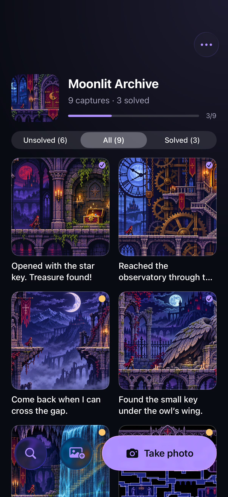
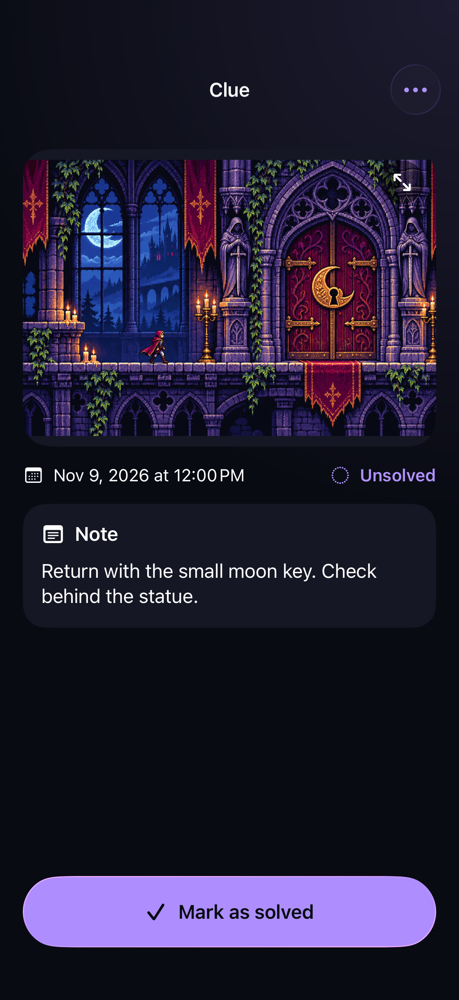
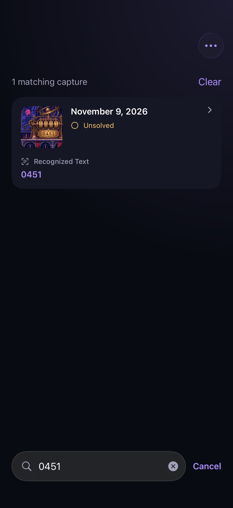

Photovania
A photo notebook for the games you’re playing. Save a clue or screenshot, add a note, and find it again later.
For iPhone and iPad. In development.



How it works
Take a photo or import an image from Photos. Keep captures in a collection for each game, add notes, and mark clues solved when you’re done. Open any image to zoom in.
Storage and privacy
No account is required. Photos, notes, and recognized text are stored on your device. Text recognition runs on-device, and capture, notes, and search work offline. Downloading artwork from a URL requires an internet connection.
The screenshots show fictional game imagery used to demonstrate the app.